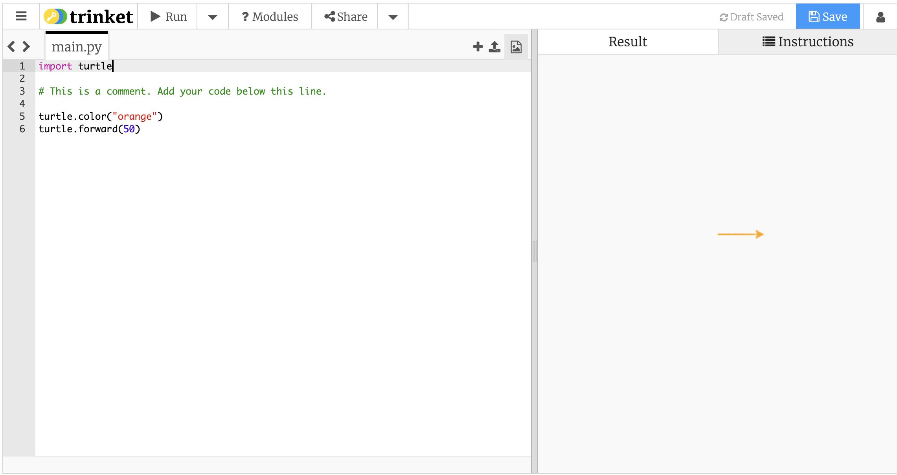

Os Fundamentos – Desenhando uma linha colorida
Antes que Alex possa aprender como criar uma colmeia, ele deve primeiro aprender a desenhar uma linha colorida. Adicionaremos código à janela do Trinket abaixo e faremos isso em duas partes.
Primeiro, precisamos dizer à tartaruga qual a cor que queremos que a linha tenha. Para fazer isso, vamos digitar:
turtle.color("orange")
Vamos entender esta linha de código com mais detalhes.
Strings
Tudo o que você vê entre aspas é chamado de string. Uma string é apenas uma sequência de caracteres (sejam letras, números ou símbolos).
No código acima, "orange" é uma string. Outros exemplos de strings incluem "123", "abc!" e "green". Tenha cuidado, 123, abc! e green não são strings porque faltam aspas!
Métodos
turtle.color() é um método. Usamos métodos para fazer com que a tartaruga execute certas ações. Neste caso, turtle.color() está mudando a cor das linhas que desenha para a cor que indicamos. Dissemos para ele mudar a cor para laranja enviando a string "orange" como um argumento.
Argumentos
Argumentos são entradas que você passa para métodos usar. Em nosso exemplo, "turtle.color() precisa de um argumento string representando o nome da cor para definir a tartaruga, então passamos "orange" como um argumento para o método. Também poderíamos ter dito para mudar a cor para outra coisa, mas tem que ser uma cor que turtle.color() entenda. As cores que ele reconhece são: "red", "orange", "yellow", "green", "blue", "purple", "black", "pink" e "gray". Se enviarmos qualquer outra coisa além de uma dessas sequências de cores, obteremos a cor padrão, que é preto.
Agora que escolhemos a cor que queremos, podemos traçar uma linha! Para traçar uma linha, existem dois métodos que podemos usar:
turtle.forward(50)
turtle.backward(50)
turtle.forward(50) fará com que a tartaruga avance 50 pixels e desenhe uma linha na direção para a qual está voltada, enquanto turtle.backward(50) fará o mesmo, mas na direção oposta.
Pixels
Uma imagem é composta por milhares, senão milhões de pixels. Um pixel é uma unidade de medida para imagens digitais, semelhante à forma como medimos o peso em gramas ou longas distâncias em quilômetros.
Inteiros
Um número inteiro é qualquer número inteiro, seja positivo ou negativo. Neste exemplo, turtle.forward() e turtle.backward() esperam um inteiro como argumento em vez de uma string. Isso ocorre porque o argumento representa o número de pixels que você deseja que a tartaruga mova ao desenhar. Uma string claramente não funcionaria para esses métodos!
Vamos fazer a tartaruga avançar, então digite turtle.forward(50). Agora seu código deve ficar parecido com isto:
import turtle
turtle.color("orange")
turtle.forward(50)
Agora que completamos nosso código, pressione run. Você deverá ver o seguinte na tela de resultados:

Se sim, ótimo! Caso contrário, peça ajuda.
Como exercício, tente entender o que a linha de código a seguir faz e tente adicionar isso ao seu código. O que isso faz?
turtle.shape("turtle")
ME AJUDE! Nada aparece na tela!
Se, depois de pressionar run, você não ver nada na tela, verifique se há um x vermelho ao lado da aba console (a aba console é ao lado da guia result no meio da tela). Se você fizer isso, você encontrou alguns erros! Clique na guia console e peça ajuda. Cuidado com o seguinte ao codificar em python:
- Não use letras maiúsculas.
- Certifique-se de que nenhuma das linhas que você escreveu até agora comece com espaços.
- Certifique-se de que o nome da cor escolhida esteja entre aspas e que a cor esteja entre parênteses em
turtle.color().